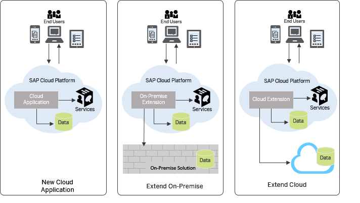

Overview
SAP Cloud Platform is an in-memory cloud platform based on open standards. It provides access to a feature-rich, easy-to-use development environment in the cloud. The platform includes a comprehensive set of services for integration, enterprise mobility, collaboration, and analytics.
SAP Cloud Platform enables customers and partners to rapidly build, deploy, and manage cloud-based enterprise applications that complement and extend your SAP or non-SAP solutions, either on-premise or on-demand.
As a Platform-as-a-Service operated by SAP, our product frees you from any infrastructure and IT costs and offers state-of-the art quality of service - availability, scalability, multitenancy.

- Develop new cloud applications
This scenario is suitable for companies that need to start developing new applications from scratch. You can create brand new cloud applications and reach your end customers easily, with a low learning curve and small capital investment in software and hardware.
- Develop on-premise extensions
This scenario is suitable for companies that have already invested a lot in on-premise IT infrastructure. You can create the new extensions to the system on the cloud, and integrate seamlessly with the on-premise components using Connectivity Service and Cloud Connector.
- Develop cloud extensions
At SAP Cloud Platform, you can also develop extensions to other cloud products, such as SuccessFactors.
You can use the following programming models to build highly scalable applications:
- Java - SAP Cloud Platform is Java EE 6 Web Profile certified. You can develop Java applications just like for any application server. You can also easily run your existing Java applications on the platform.
- SAP HANA - you can use the SAP HANA development tools to create comprehensive analytical models and build applications with SAP HANA programmatic interfaces and integrated development environment.
- HTML5 - you can easily develop and run lightweight HTML5 applications in a cloud environment.
- SAPUI5 - use the UI Development Toolkit for HTML5 (SAPUI5) for developing rich user interfaces for modern Web business applications.
In the context of SAP Cloud Platform, a solution is comprised of various application types and configurations created with different technologies, and is designed to implement a certain scenario or task flow. You can deploy solutions by using the Change and Transport System (CTS+) tool, the console client, or by using the cockpit, where you can also monitor your solutions. To describe and technically realize the solutions, SAP Introduces the multi-target application (MTA) model. It encompasses and describes application modules, dependencies, and interfaces in an approach that facilitates validation, orchestration, maintenance, and automation of the application throughout its lifecycle.
Virtual machines allow you to install and maintain your own applications in scenarios not covered by the platform. A virtual machine is the virtualized hardware resource (CPU, RAM, disk space, installed OS) that blends the line between Platform-as-a-Service and Infrastructure-as-a-Service.
You can consume a set of services provided by SAP Cloud Platform according to the technology you prefer and the use cases of your scenarios.
SAP Cloud Platform facilitates secure integration with on-premise systems running software from SAP and other vendors. Using the platform services, such as the connectivity service, applications can establish secure connections to on-premise solutions, enabling integration scenarios with your cloud based applications.
SAP Cloud Platform includes persistence powered by SAP HANA, taking full advantage of its real-time, in-memory computing technology and built-in analytics.
Comprehensive, multilevel security measures have been built into SAP Cloud Platform. This security is engineered to protect your mission critical business data and assets and to provide the necessary industry standard compliance certifications.
You can start by getting a free SAP Cloud Platform developer license on SAP Cloud Platform Developer Center that also gives you access to our community and all the free technical resources, tutorials, blogs, support you need.